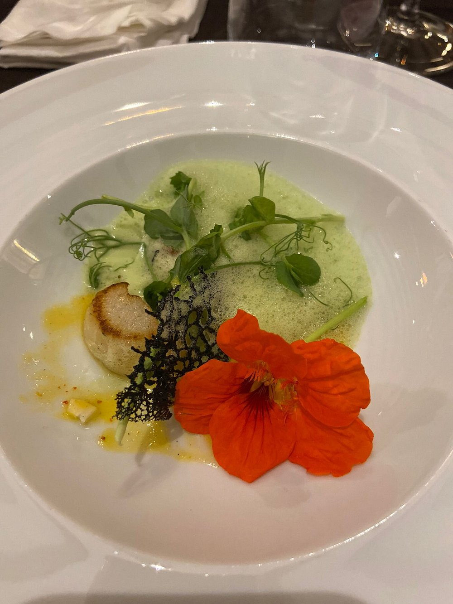
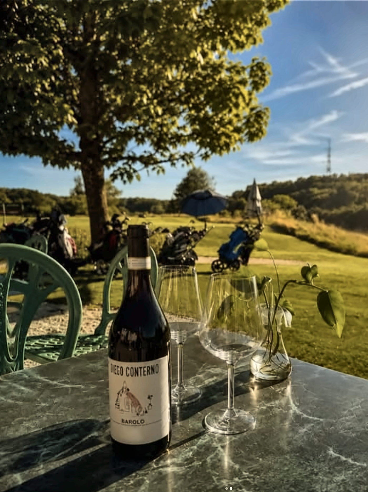
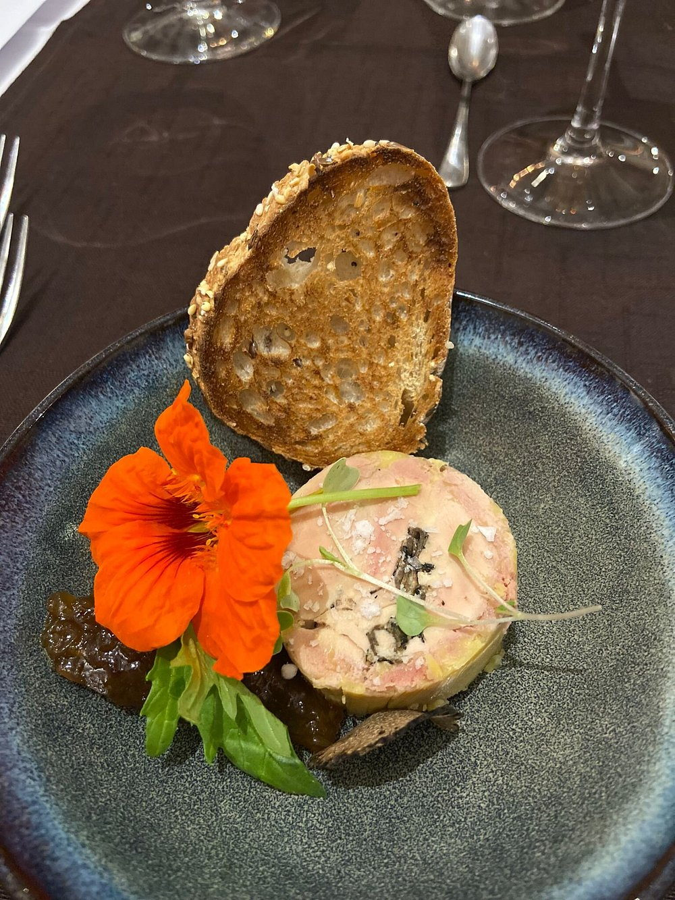

Une table au calme, au bord du parcours.
Goumoens-le-Jux · Vaud
Le restaurant
Une cuisine soignée,
un cadre de campagne
Au cœur du Gros-de-Vaud, Le 9 est le restaurant du Golf du Domaine du Brésil. On y vient pour la vue sur le parcours, le calme des lieux et une cuisine faite maison.
La carte du chef Jérôme Rochat suit les saisons et porte le label Fait Maison. Golfeur ou non, la maison accueille tout le monde : déjeuner entre collègues, repas de famille, verre en fin d'après-midi ou dîner au coucher du soleil.
- 01Cuisine fait maison, produits de saison
- 02Terrasse avec vue sur le parcours et les collines
- 03Salle pour les repas de groupe et les événements

assets/photos/salle.jpg

assets/photos/plat-01.jpg
La carte
Des entrées aux desserts,
en passant par la carte des golfeurs
Une carte courte qui suit les saisons, une carte des golfeurs pour un repas plus rapide, et un menu pour les enfants. Prix en CHF, service compris.
Les entrées
- Salade de feuilles folles, vinaigrette miel et moutarde6.–
- Salade de légumes en crus et cuits12.–
- Bisque de homard maison18.–
- Mousse de saumon fumé au sarment de vigne, poireaux vinaigrette à l'orange, émulsion champagne21.–
- Foie gras mi-cuit au piment d'Espelette, chutney de pomme Granny Smith et brioche maison25.–
Les viandes
- Entrecôte de bœuf 160 g32.–
- Tartare de bœuf traditionnel 120 g33.–
- Tartare de bœuf traditionnel 200 g, pain grillé et frites fraîches41.–
- Vitello tonnato, frites maison et salade35.–
- Flan de cochon cuit à basse température 12 heures39.–
Les poissons
- Filets de perche meunière, sauce tartare, 120 g29.–
- Gambas en persillade, tagliatelles à la crème safranée32.–
Les pâtes
- Tagliatelles aux tomates séchées et pesto genovese23.–
- Raviolis farcis au citron, beurre de sauge26.–
Les salades
- Salade de poulpe au paprika fumé25.–
- Salade terre et mer37.–
Les desserts
- Crème brûlée du moment13.–
- Sorbet arrosé13.–
- Café gourmand, trois pièces14.–
- Assortiment de fromages d'ici et d'ailleurs14.–
- Abricots du Valais rôtis au miel, crème mascarpone, crumble et sorbet fraise-mélisse15.–
- Cœur coulant au chocolat de Madagascar15.–
- Glace ou sorbet, la boule4.–
La carte des golfeurs Service rapide
- Burger du chef, pain brioché au sésame25.–
- Tagliatelles aux vongoles et seiches25.–
- Roastbeef froid, sauce tartare28.–
La carte des enfants
- Pâtes nature6.–
- Nuggets de poulet maison, frites14.–
- Steak haché, frites14.–
Menu « 3 notes »
Entrée, plat et dessert composés par la cuisine.
- Petite faim63.–
- Grande faim78.–
- Accord mets et vins, trois verres18.–
Allergies, intolérances, régimes particuliers : dites-le-nous à la réservation ou au moment de commander.
Télécharger la carte PDF à ajouter
assets/photos/terrasse-vue.jpg
Citée par la presse parmi les « 100 terrasses de rêve » pour passer un bel été.
Source à préciser
La terrasse
Le parcours en vis-à-vis,
le ciel pour plafond
Aux beaux jours, la terrasse s'ouvre sur le green et les collines du Gros-de-Vaud. Le déjeuner s'y étire, l'apéritif s'y prolonge.
Une partie de la terrasse est couverte et vitrée : la vue reste, quel que soit le temps. Le soir, le soleil se couche derrière les fairways.
Réserver une table en terrasse
assets/photos/terrasse-01.jpg

assets/photos/plat-02.jpg
Horaires
Quand nous trouver
Les horaires sont en cours de validation. Avant de vous déplacer, un coup de fil suffit.
Appeler le 021 882 24 19Le lundi en particulier est à confirmer : selon les sources, le restaurant est fermé ou ouvert ce jour-là.
| Lundi | à confirmer |
|---|---|
| Mardi | à confirmer |
| Mercredi | à confirmer |
| Jeudi | à confirmer |
| Vendredi | à confirmer |
| Samedi | à confirmer |
| Dimanche | à confirmer |
Contact et accès
Chemin du Brésil 4,
Goumoens-le-Jux
Le 9 · Restaurant du Golf du Brésil
Chemin du Brésil 41376 Goumoens-le-Jux, Vaud Ouvrir l'itinéraire
- Sur le domaine du Golf du Brésil, dans le Gros-de-Vaud, entre Lausanne et Yverdon-les-Bains.
- Parking sur place, au golf. à vérifier
Réservation
Une table se réserve par téléphone
021 882 24 19Groupes, banquets, événements privés : écrivez-nous à restaurantle9@golfbresil.ch.